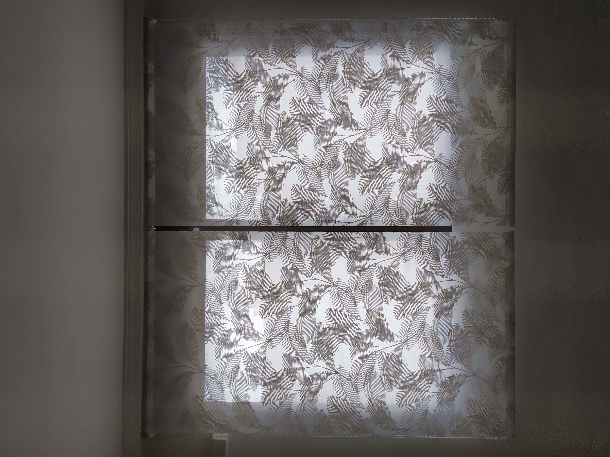
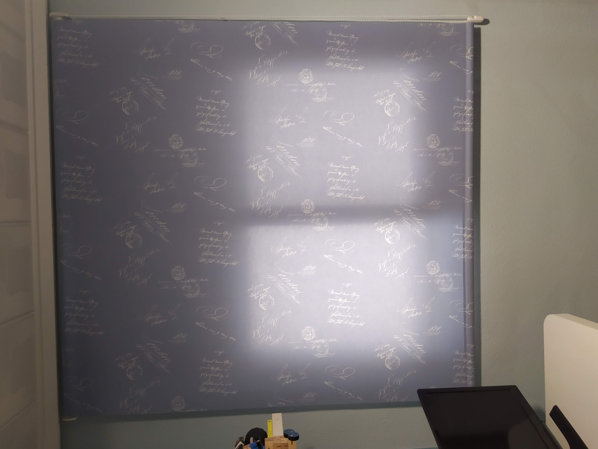
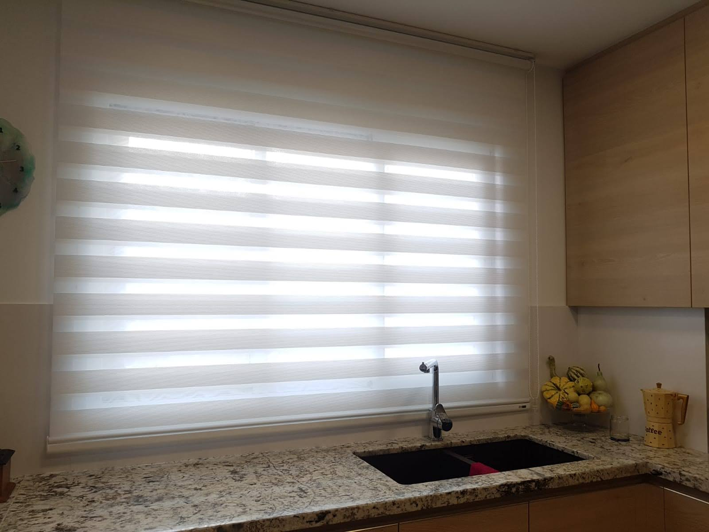
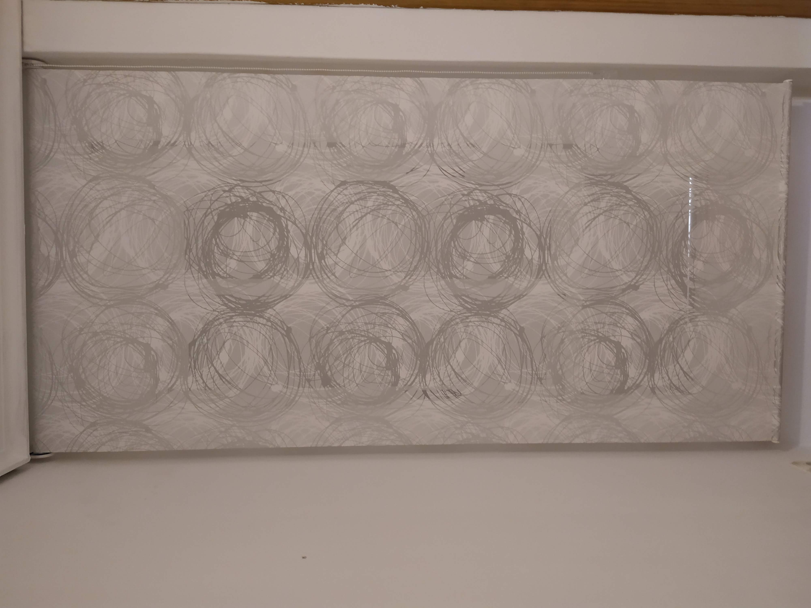

Estores enrollables
Lisos, estampados y combinados con opcion de cajon o sin cajon.
Que ofrecemos
Los estores enrollables son una solucion practica para regular la luz con una estetica limpia y contemporanea. Instalamos tejidos screen, opacos y traslucidos segun el nivel de control solar que necesites.
Son ideales para cocinas, oficinas y zonas de uso diario porque ocupan poco, se limpian facil y permiten accionamiento manual o motorizado.
Proceso de trabajo
Realizamos medicion precisa de hueco o pared, recomendamos tejido y accionamiento, y fabricamos cada estor al milimetro. En la instalacion final ajustamos subida, bajada y tension para un movimiento suave.
Galeria de estores enrollables



